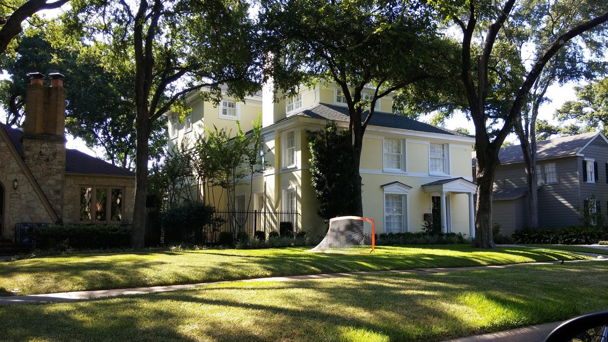
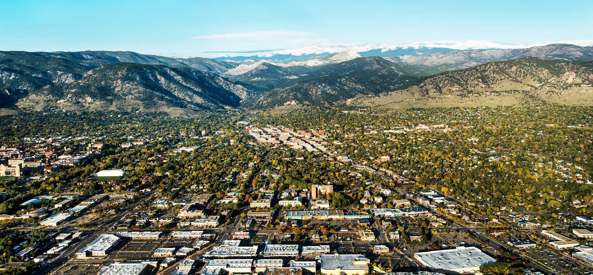
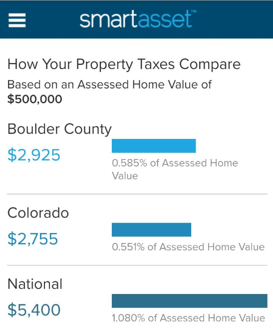
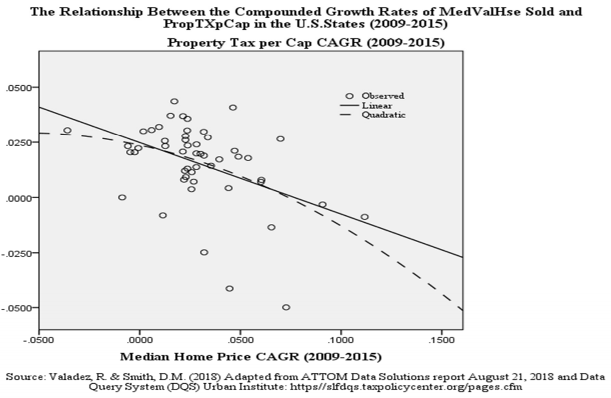

미국인들은 왜 노후준비를 부동산으로 하지 않는가?
게시: 2020-01-23T06:30:42+09:00
저는 FIRE(Financial Independence Retire Early)에 관심이 많습니다. 그래서 은퇴 관련 재테크 뉴스를 자주 찾아 보는 편입니다. 은퇴 준비랄 것이 뭐 특별한게 없습니다. 건강, 가족, 친구, 여가 등등 많습니다만 결국 돈 이야기지요 뭐. 다만 국내 뉴스나 사이트 중에는 그런 소식이 많지 않아서 부득이하게 해외 뉴스와 해외 사이트를 자주 봅니다. 그런데 해외와 국내의 은퇴 준비 행태를 보면 정말 크게 차이가 나는 것이 있습니다. 은퇴 자금 투자를 금융 상품에 하느냐 부동산에 하느냐의 차이입니다. 제가 접하는 주변 분들이나 뉴스, 웹 상에서 접하는 이야기들을 봐도 국내는 '노후 준비는 역시 부동산'이라는 것이 정설인 것처럼 보입니다. 살고 있는 집 이외에 임대용 부동산을 마려할 여유가 없으신 분들도 '주택연금'이라는 이름의 역모기지론을 이용할 수 있으니 결국 그것도 노후 준비는 부동산인 셈입니다. 부동산은 평범한 서민들이 사기에는 엄청난 고가이니까 대개 대출이 없이 사는 것도 힘들고, 따라서 노후 대비용 자산 대부분이 부동산에 다 몰빵되는 경우가 많습니다. 그러나 해외 (그래봐야 결국 미국인데) FIRE 사이트를 보면 임대용 부동산(rental properties)에 투자하는 것은 매우 바보짓이라고들 이야기를 합니다. 요약하면 세금과 보험료, 유지정비 비용이 드는데다 까탈스러운 세입자들을 상대해야 하는 번거로움에다 공실의 위험까지 생각하면 전혀 투자 가치가 없다는 것입니다. 무엇보다, 상대적으로 안전하고 수수료도 적은 인덱스 펀드(ETF 같은 것)에 투자해놓으면 수익률도 좋고 신경쓸 것도 없는데 뭐하러 귀찮게 임대용 부동산에 투자를 하느냐는 것이지요. 물론 일부 사람들은 '아니다, 임대용 부동산이 최고다'라고 주장하기도 하는데, 전반적인 분위기는 그렇지 않더라고요. 제 막연한 추측에 불과합니다만, 미국에서 임대용 부동산이 그다지 좋은 노후 대책이 아닌 이유는 대략 다음과 같지 않을까 합니다. 1) 미국은 워낙 땅이 넓어서 뉴욕이나 샌프란시스코 등 정말 핫한 도시가 아니면 부동산 가격이 무조건 오르는 것이 아닌 듯 합니다. - 이건 생각해보면 우리나라도 마찬가지입니다. 최근 부동산 가격이 미친 듯이 올랐다고들 하지만 전국적으로 보면 그렇지 않고 그저 서울, 그것도 강남 등 몇몇 핫 플레이스의 아파트들이 주로 올랐습니다. 우리나라야 전국 인구 20%가 서울에 살지만 미국은 그렇지 않으니 더욱 그럴 것입니다. 2) 미국은 인건비가 비싼데다 목조 투택이 많아서 유지보수 비용이 많이 듭니다. - 원래 진짜 서민은 서울 소재 아파트에 살 수가 없다고들 하던데, 아무튼 우리나라 사람들이 투자 용도로 생각하는 대표적 주거용 부동산인 아파트라는 주택 형태는 철근 콘크리트로 지어져 있고 관리사무소가 딸려 있기 때문에 집주인들이 평상시에 유지보수에 신경쓸 일이 거의 없습니다. 기껏해야 세입자가 바뀔 때 도배장판 및 싱크대 교체를 해주는 정도인데, 사람이 귀하지 않은 우리나라 특성상 인건비가 싸서 대부분 인테리어 업자에게 맡겨버리면 그만입니다. 하지만 미국은 목재로 만들어진 개인 주택이 많아서 주기적으로 이런저런 수리를 해야 할 일이 많고, 특히 인건비가 비싸다보니 그런 보수 비용이 상당히 비싼 편입니다. 3) 집주인이 갑이 아니고 세입자들이 을이 아닙니다. - 우리나라에서도 전셋집 주인에게 '거실 형광등이 나갔으니 갈아주세요' 라고 요구하는 까탈스러운 세입자들이 있다고 하지만 그건 소수인 것 같고, 대부분 세입자가 유지보수를 해달라고 집주인에게 연락하는 일이 많지 않습니다. 하지만 미국은 갑을 관계라는 것이 별로 통하지 않는 문화이다보니 세입자들이 상당히 까탈스럽습니다. 그리고 그런 까탈스러움은 잦은 소송으로 구체화됩니다. 이건 변호사 공급이 넘쳐나는 나라라서 소송 비용이 많이 들지 않기 때문일 것입니다. 그게 사회적으로 좋은 일인지 나쁜 일인지를 떠나서 덕분에 집주인은 언제 무슨 일로 소송을 당해서 돈을 뜯길지 걱정을 하고 있어야 합니다. 제가 한다리 건너 아는 분이 LA 지역에서 큰 공구점 (Home Depot 같은 것)을 운영하셨는데, 그 공구점 창고 건물 내부도 아니고 그 바로 외부의 입구 쪽 도로에서 어떤 고객이 발이 걸려 넘어지면서 다쳤답니다. 그런데 그게 곧장 소송으로 돌아오더래요. 입구 도로 정비를 잘 하지 않았고 거기에 주의 표시도 하지 않았다고요. 그게 또 미국의 높은 의료비와 맞물려서 이 주인분에게 뜻하지 않은 비용으로 연결된 것이지요. (참고로 결국 늘 그렇듯이 정식 재판까지 가지 않고 변호사 입회 하에 합의금 전달하고 끝냈다고 합니다.) 4) 부동산 소유에 따른 세금이 많습니다. - 텍사스 오스틴(Austin)에 사는 대학 친구가 하나 있습니다. 그네가 매달린 큰 아름드리 나무가 있는 뒷마당이 딸린 넓은 이층 주택, 그러니까 전형적인 미국 중산층이 사는 주택을 보유하고 있는데, 한 7~8년 전에 우리 돈으로 5억 정도를 주고 샀다고 합니다. 그런데 1년 세금이 우리 돈으로 대략 1천만원 정도 나온대요. 거의 2%인 셈입니다. 좀더 쉽게 말해서 주택을 50년 보유하면 집값만큼 세금을 내는 셈입니다. 우리나라에서 거의 20억짜리 주택에 종부세가 몇 십만원 나오는 것을 가지고 언론에서 세금 폭탄이라면서 난리법석을 떠는 것을 보면 우습기는 합니다. (물론 우리나라는 대신 거래세가 높습니다.)

(제가 텍사스 오스틴에서 그냥 찍은 흔한 주택입니다. 이게 제 친구네 집은 아니지만 제 친구네 집도 대충 이렇게 생겼습니다. 이런 집이 5억 밖에 안한다니 !)
실은 이번 포스팅을 쓰게 된 것도 최근에 본 아래 기사에 대한 미국 사람들의 댓글을 본 것이 계기가 되었습니다. 아래 기사 내용은 최근 미국의 주택담보대출 이자율(Mortgage Rate)이 떨어지면서 새로 주택담보대출 신청이 크게 늘었다는 것입니다. 핵심을 요약하면 그런 대출 신청의 60% 정도는 기존 대출을 더 싼 이자로 갈아타기 대출을 하는 것이고, 15% 정도가 새로 주택을 구입하기 위해 신규 대출을 하는 것이라고 합니다. Falling Mortgage Rates Set Off a Stampede of Borrowing https://finance.yahoo.com/news/falling-mortgage-rates-set-off-172646393.html 기사 내용은 크게 흥미롭지 않습니다만, 댓글 중에 재미있는 것이 있었어요. 미국인들 댓글 중에도 빈정대는 것이 많더군요. b : Ah yes, the daily reminder from the lending/real estate industry that YOU should borrow more and more.....smh.... 아 그래, 빚을 더 많이 내라고 대부업자/부동산업자들이 매일매일 알려주는구나... JoJo : This is an ad right? 이 기사는 광고 맞지 ? southernwonder : a SALE sign on mortgage rate? gotta buy another house even if dont need one. just like running over to stores to buy discounted stuff might not really need. 주택담보대출 이자율에 대해 바겐세일 간판이 붙었네 ? 뭐 필요하진 않아도 집을 하나 더 사야하나 ? 필요하지도 않은 물건을 세일 한다니까 사려고 가게로 뛰어가는 것처럼 말이야. Timothy : Not so easy to peddle those mortgages, now that the interest is no longer tax deductible, is it? Tomorrow's headline? "Fee-filled Annuities Are Great Idea for Your Tax-free or Tax-deferred IRA!" 주택담보대출 파는거 쉽지 않다구. 그거 이자 내는 걸 이젠 세금 공제를 해주지 않으니까. 이래 놓고 내일자 헤드라인은 이렇게 나올 걸 ? "수수료 뜯어가는 연금상품이 여러분의 비과세 혹은 유예과세된 개인퇴직연금에 아주 좋습니다" 그 중에서도 많은 수의 대댓글이 달리고 또 저의 관심을 끌었떤 댓글은 바로 아래 것이었습니다. 요약하면, 이렇게 하면 대출 받아서 임대부동산으로 돈 버는 것이 아주 쉽다 라는 내용이었습니다. Pinkey : Buy 1 million worth of real Estate for 200,000 down. (maybe 5 200K houses) Then rent it out. Interest only loan for 800,000 @ 3.5 Rate is 2,333 a month. That's only 27,996 K a year for interest. Hopefully you can rent the real estate 7,500 a month or more. (and keep it fully rented) 90,000 a year revenue. 90,000 - 27996 - Taxes (7,500) - Insurance (5000) - Maintenance/repairs (4,500) = 45,000 in your pocket. ROI: 45,000/200,000 = 22.5% Rinse and repeat! 20만불 원금으로 100만불어치의 부동산을 사. (20만불짜리 주택 5채 정도) 그리고나서 임대를 주라고. 대출 80만불에 대해 3.5% 이율의 이자만 갚아나가면 한달 비용이 2,333불이야. 1년 이자라고 해봐야 27,966불에 불과해. 임대료로 한달에 7,500불 이상 받기를 기대해보자구. (공실도 없다고 가정하고 말이야) 그러면 한해 매출이 9만불이야. 90,000 - 27,966 - 세금 (7,500) - 보험 (5,000) - 유지정비료 (4,500) = 45,000불이 순이익으로 남아 ROI (투자대비수익률) : 45,000/200.000 = 22.5% 털어내고 이걸 계속 반복해 ! 이 환상적인 돈벌이 계획에 대해 달린 대댓글은 아래와 같습니다. Nigel : On what planet does 1 million in property only cost 7500 in taxes? 어떤 혹성에서 100만불짜리 부동산 세금이 고작 7,500불 밖에 안 되냐 ? (역주: 계산해보면 0.75% 세율인데, 우리나라가 바로 그 혹성입니다.) Anonymous : Hmmmm, My 200K home costs 3.8k/yr in taxes and 1.8k in insurance. Five of these would cost 19.2k in taxes and 9k in insurance for an annual outlay of 28.2k, which is more than double your estimate. Your rental estimate is valid and maintenance costs aren't bad but with an interest only loan you had better pray your property appreciates and your renters are stable. 흠. 내 집이 20만불짜리인데, 1년 세금이 3,800불 나오고 (역주: 1.8% 세율입니다) 보험료가 1,800불 나와. 이런 집 5채면 세금이 19,200불에 보험료가 9,000불이니까 합하면 연간 총액이 28,200불인데, 이거 니가 산정한 것의 두배 이상이야. 니가 예상한 임대료는 그럴 듯하고 유지정비료도 나쁘진 않아. 하지만 그렇게 이자만 갚아나가는 대출이라면 니가 산 부동산 가격이 오르고 세입자들이 안정적으로 들어오기를 기도해야 해. (역주: 역시 우리나라에서는 부동산은 무조건 오른다고 생각하는데 미국인들은 꼭 그렇지는 않은가 봅니다.) Rick : Pinkey... you buy 5 $200k houses and your rate is going to be considerably higher than 3.5% Your debt to income ration combined with non-owner occupied status is gonna push you up closer to 5 핑키... 니가 20만불짜리 집 5채를 산다면 니 이자율은 3.5%보다는 훨씬 높을 거야. 너의 소득 대비 부채 비율에다가 너의 상태가 비거주 소유자니까 아마 이율은 5%에 가까울 거야. CORunner : Obviously, you are NOT an investor. First, you have to qualify for those loans, second, investment properties usually require 25% down and carry higher interest rates than primary residence loans. That's just the lack of realism and logic in your first paragraph... 넌 진짜 투자가가 아닌게 뻔히 보이네. 첫째, 넌 그런 대출에 대해 자격요건을 갖춰야 하고, 둘째, 투자용 부동산은 보통 자기자본 25%를 갖춰야 하는데다 실주거용 대출 이율보다 훨씬 높은 이율이 적용돼. 너의 첫번째 문단에서 현실성과 논리의 부족이 확 드러난다. richard t : I keep 2 million dollars in the U.S. Stock market. Return on investment, an average of $200,000 annually. Keep it in my 401K so no taxes, no insurance, and no maintenance. Profits earn an additional $20,000 next year. Keep reinvesting the profits until you retire. No worries about vacancies, tenants, lawsuits. 난 미국 주식시장에 2백만 달러를 가지고 있는데 투자대비수익은 평균적으로 연간 20만불 정도야. 난 그걸 401K (역주 : 일종의 퇴직연금입니다)에 넣어놓기 때문에 세금도 안 붙고 보험도 필요없고 유지보수비도 필요없어. 거기에 붙는 수익이 추가로 20,000불 정도야. 은퇴할 때까지 수익을 재투자하라구. 공실 걱정도 없고, 세입자나 소송과 씨름할 필요도 없어.
Mark D : 45k should be devided by the total cost, 1 million not 200k... 수익금 45,000불을 전체 투자금인 100만불로 나눠야지, 니 원래 자본인 20만불이 아니라. (역주: 그런가요? 여기서 45,000불은 임대수익에서 대출금 80만불에 대한 이자를 뺴고 남은 거니까 그냥 20만불로 나누는 것이 맞지 않을까 생각합니다만 저는 잘 모르겠네요.) christopher : @Nigel our 1.5 m home in boulder is about 6500 a year in tax 나이절, 우리 집은 보울더(역주: 콜로라도에 있는 인구 10만 정도의 소도시입니다)에 있는 150만불짜리인데 세금이 연간 6,500 정도야. (역주: 0.43%의 세율입니다. 콜로라도 산골이라서 그런 것일 수도 있습니다만, 글쎄요, 상대적으로 세금이 싸서 집값이 높게 형성된 것으로 봐도 될까요?)

(콜로라도 보울더 전경입니다. 산 좋아하는 한국 사람들에게 아주 좋은 동네입니다. 텍사스는 지옥불반도에 지긋지긋한 한국인들에게는 별로 좋지 않은 동네입니다.)

(찾아보니... 예, 정말 콜로라도의 재산세가 확실히 낮네요. 재산세의 미국 전국 평균은 시가의 1% 정도랍니다.)
여러분은 위의 댓글과 그 대댓글을 재미있게 읽으셨는지 모르겠습니다. 저는 재미있게 읽었습니다. 특히 맨 마지막 보울더에 사는 크리스토퍼 씨의 댓글을 읽다보니 보유세, 그러니까 재산세가 낮으면 상대적으로 부동산 가격이 오르는가 하는 궁금증이 생기더군요. 구글링을 해보니 확실히 관계가 있기는 한 것 같습니다. (이건 단정적으로 말하기 어렵습니다. 세상 일, 특히 돈 문제는 단순히 한두 가지의 원인만으로 일어나지 않습니다.)
The burden of property taxes on home appreciation: A relationship study between property taxes and home values in the U.S. 주택 가격 상승에 대한 재산세의 부담 : 재산세와 미국 주택 가격의 관계 https://www.aabri.com/manuscripts/182935.pdf This study concludes that there exists an inverse relationship between median values of homes and property taxes per capita for the period following the housing crisis and the great recession in the U.S. 이 연구 결과에 따르면 부동산 위기와 경기 침체 이후 기간의 주택의 중간값과 두당 재산세에는 반비례의 관계가 존재한다.

오늘 포스팅을 굳이 3줄 정리하라고 하면 다음과 같습니다. - 미국은 부동산 보유세가 높아서 부동산으로 돈버는 것이 쉽지 않다. - 부동산에 돈이 몰리지 않으면 금융 쪽으로 돈이 몰려서 기업들의 금융 비용을 줄여준다. - 보유세가 낮으면 부동산으로 돈이 몰리므로 결국 부동산 가격이 오르는 것 같습니다.
PS. 가끔 유럽에 있는 으리으리한 성이나 저택이 1달러에 매물로 나오는 이유가 막대한 유지보수 비용과 세금 때문이라는 것을 생각하면... 정말 보유세와 부동산 가격의 상관 관계가 있을 것 같습니다.